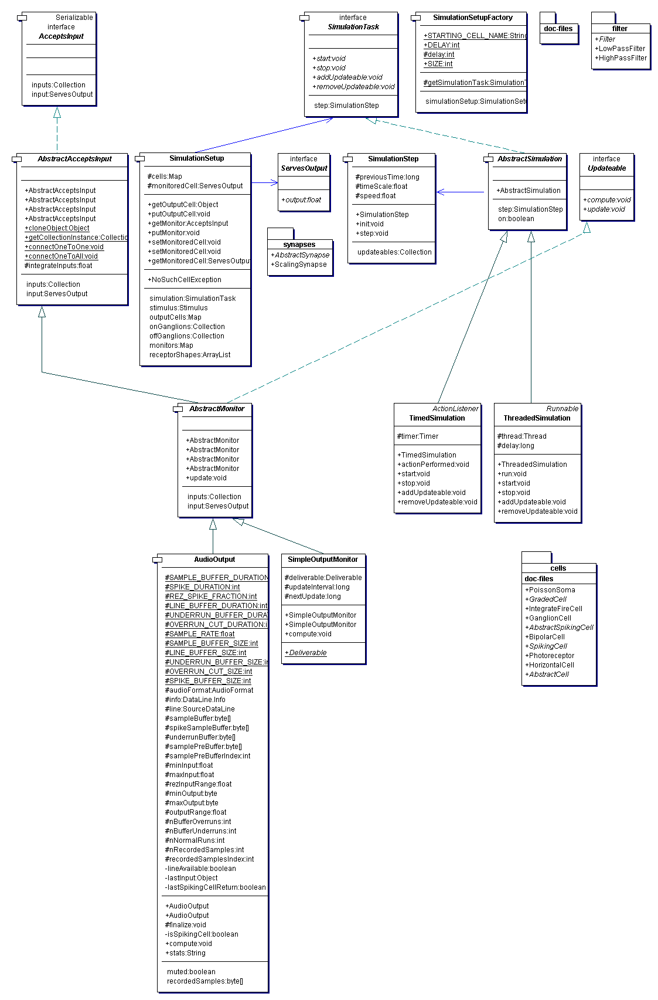

|
The Physiologist's Friend Simulation API | ||||||||
| PREV PACKAGE NEXT PACKAGE | FRAMES NO FRAMES | ||||||||
See:
Description
| Interface Summary | |
|---|---|
| AcceptsInput | Common interface to simulation components that accept inputs. |
| ServesOutput | This interface is provided by all components that offer an output in the simulation. |
| SimulationTask | The interface of a simulation for the controlling thread. |
| Updateable | This interface provides members common to all classes that participate in a simulation. |
| Class Summary | |
|---|---|
| AbstractAcceptsInput | Provides the infrastructure for a simulation component with many inputs. |
| AbstractMonitor | Default implementation for a monitor. |
| AbstractSimulation | Provides a few default implementations for the SimulationTask interface. |
| AudioOutput | Plays the output of a ServesOutput on the speaker,
if the cell being played makes spikes. |
| SimpleOutputMonitor | Provides synchronization between the gui and the simulation needed for the gui to monitor the output of a simulation component. |
| SimpleOutputMonitor.Deliverable | An abstract class whose heirs' instances can be passed to invokeLater()
by an instance of SimpleOutputMonitor. |
| SimulationSetup | A collection of references to objects that together describe the current state of the simulation. |
| SimulationSetupFactory | Factory methods for creating instances of SimulationSetup. |
| SimulationStep | Implements a single iteration in the simulation process. |
| ThreadedSimulation | Implementation of the simulation loop in a separate thread. |
| TimedSimulation | Implementation of the simulation loop with the javax.swing.Timer mechanism. |
| Exception Summary |
|---|
Code that simulates the cells.
The simulation is constructed by the factory method SimulationSetupFactory.getSimulationSetup().
It returns a SimulationSetup that affords access to some of the cells.
The simulation is updated by a particular SimulationTask. This task is hard-coded to be
either a ThreadedSimulation or a TimedSimulation by
SimulationSetupFactory. The SimulationTask simply loops over the
SimulationStep. This SimulationStep first computes all the cell responses
at the present time step, and then updates the output values of all the cells based on what happened during that time step.
All objects (cells and monitors) that need to be
processed for a simulation have the interface Updateable, which affords
a double-buffering of the simulation by separating the computation and
double-buffering of the states of all the components.
This double-buffering means that the latency is linear in the number of stages of processing. An excitation of a photoreceptor will only reach a cortical simple cell output after the information has flowed through the photoreceptor, bipolar, ganglion, and simple cell ouptuts -- at least 4 simulation update cycles.
The number of simulation iterations over the population of updateables is
controlled by SimulationStep.nIterate.
This parameter can be set to >1 to iterate over all the cells multiple times for
each simulation. Setting this >1 will propogate signals through the network more
quickly, although the dynamics will not be changed because each simulation step
uses the real time as measured by System.currentTimeMillis().
Cells in the simulation are either constructed by one-to-one correspondence with a preceeding layer by static methods
(e.g., AbstractAcceptsInput.connectOneToOne(java.util.Collection, java.util.Collection),
BipolarCell.getArrayListInstance(java.util.ArrayList, float, ch.unizh.ini.friend.simulation.ServesOutput, float)) or by specific assignment of inputs.
Inputs to cells usually implement ServesOutput, the most common
inputs are cells and synapses (e.g., descendants of AbstractCell,
AbstractSynapse).
Simulation monitoring by the GUI is possible by means of monitors (objects that usually implement
AbstractMonitor).
This class implements Updateable, so concrete descendants
can be added to the simulation to monitor a particular cell.
An example is SimpleOutputMonitor, which is used by the GUI
to put the activity of a selected cell on the ActivityMeter.
AudioOutput renders its input cell audibly.
Here is the UML diagram for this package:

|
http://www.ini.unizh.ch/~tobi/friend | ||||||||
| PREV PACKAGE NEXT PACKAGE | FRAMES NO FRAMES | ||||||||